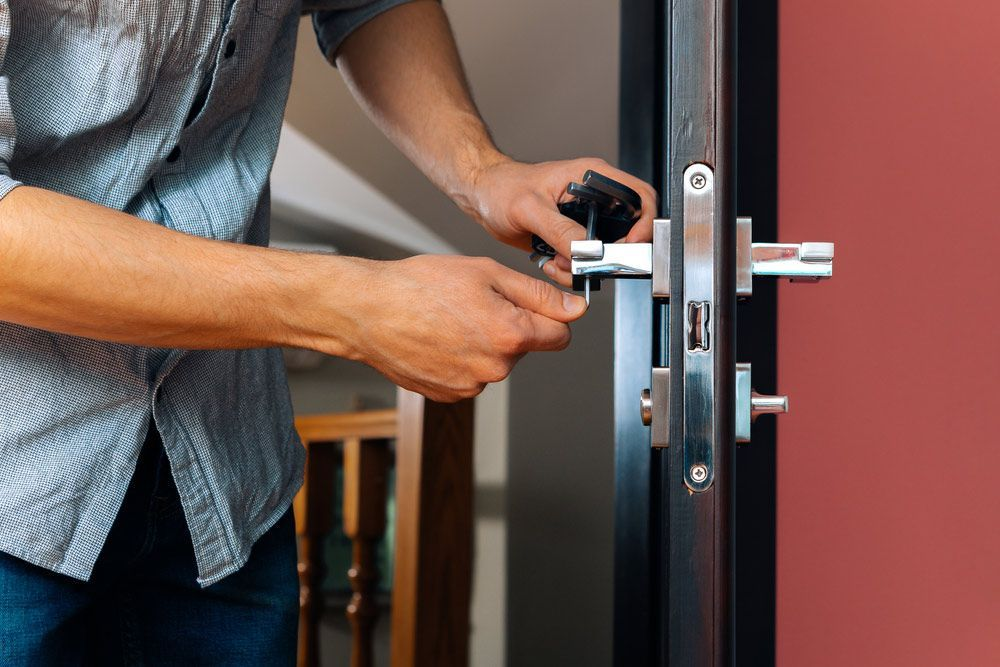
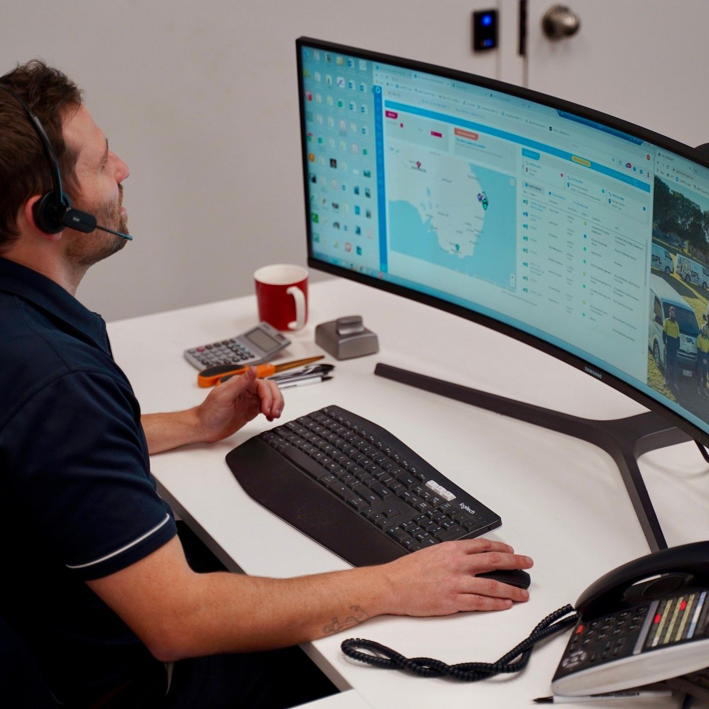

AT A GLANCE
At SPL Security Solutions, we deliver comprehensive security systems and expert locksmith services to safeguard your property.

At SPL Security Solutions, we deliver comprehensive security systems and expert locksmith services to safeguard your property. Our security solutions include CCTV, access control and intercoms, all tailored for continuous protection. Routine maintenance keeps these systems running smoothly, preventing issues and maximising performance. We conduct thorough inspections, perform updates and make necessary repairs.
As a Master Locksmith, we offer a full range of residential, commercial and automotive locksmith services, including lock installations, restricted key systems and emergency unlocking. Our maintenance ensures your locks remain secure and functional over time. Regular servicing of locks and restricted key systems helps identify potential wear, preventing lockouts and enhancing overall security.
Trust SPL Security Solutions for reliable, end-to-end security and locksmith services. Call us on (07) 5588 8111 to schedule your next service or discuss a tailored maintenance and alarm monitoring plan. We assist clients across the Gold Coast, Brisbane and Tweed Heads.
Alarm Monitoring
In addition to our security system installation and maintenance, we offer alarm monitoring for comprehensive protection. Our alarm monitoring service allows us to remotely monitor your property for potential security breaches or incidents. If an alarm is triggered, our team will immediately take the appropriate course of action, notifying the relevant authorities.

Electronic Security Maintenance
At SPL Security Solutions, we understand that maintaining the reliability and effectiveness of your electronic security systems is critical to protecting your property and assets. Our comprehensive electronic security maintenance services ensure that your alarms, access control systems and CCTV cameras are always in optimal working condition.
We offer routine inspections, system diagnostics, firmware updates and component replacements to prevent system failures and ensure continuous protection. Our expert technicians are trained to quickly identify and resolve any issues, minimising downtime and maximising the performance of your security infrastructure. Rest assured, we'll provide the peace of mind that comes with knowing your electronic security systems are always ready to protect what matters most.
Choose from quarterly, biannual or annual maintenance visits. Please contact us to tailor a package to your specific needs and budget.
Service Areas
Brisbane
Northern NSW